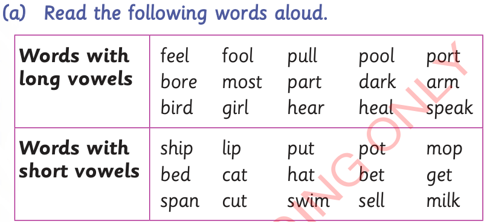

Activity 3: Reading words with short and long vowels
(a) Read aloud/sign the following words.

Words with long vowels: feel, fool, pull, pool, port, bore, most, part, dark, arm, bird, girl, hear, heal, speak. Words with short vowels: ship, lip, put, pot, mop, bed, cat, hat, bet, get, span, cut, swim, sell, milk.
(b) Construct a sentence for each of the following words.
(i)pot
(ii)port
(iii)hill
(iv)heal
(v)bird
(vi)bed
Activity 4: Reading sentences containing words with short and long vowels
(a) Read aloud the following sentences/sign the words in the following sentences.
(i) I saw a ship. (ii) I saw a sheep on the ship. (iii) Tutu likes to bet. (iv) Monde likes bats.